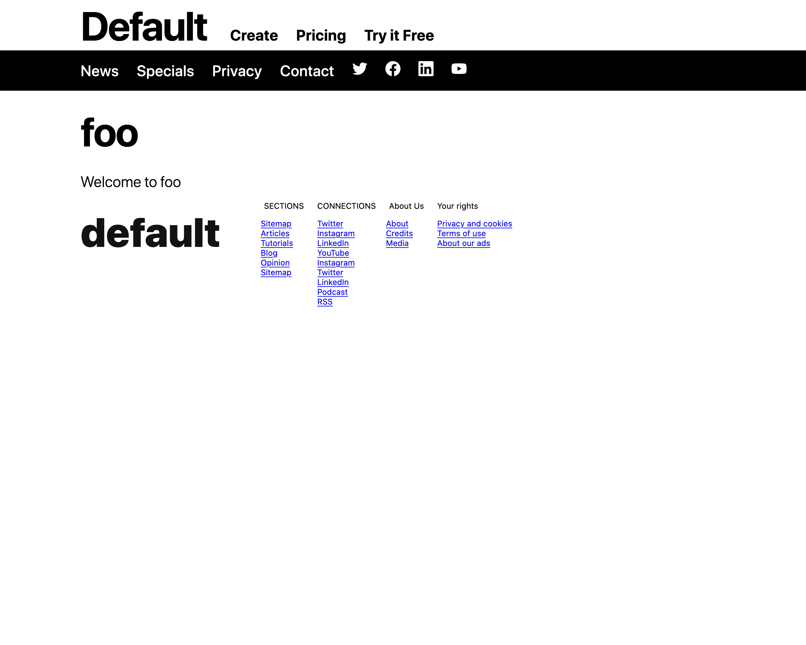

Metabuzz theme architecture
If you just want a tutorial on how to create your own theme, visit the Tutorial: Creating a custom theme for Metabuzz page.
Metabuzz is designed to let you create attractive, full-featured websites as soon as you've installed the software. All you need to know is the basics of Markdown, and even that's optional, because any text at all is valid Markdown. (See the CommonMark spec if you're interested).
A Metabuzz site lives in its own directory. Inside it are a number of subdirectories for the site's source (markdown files and graphic assets such as images, favicon.ico, site configuration, and helper files for things like embedding tweets or YouTube videos). Some of these directories start with the period or dot character. They're hidden by default on Unix-style systems but otherwise they're no different from any other directory.
There is also a directory holding the output of the site--the rendered HTML. This portion gets copied to the web server when you're ready to publish. If you use Git it's easy to make this happen automatially when you push you repository.
Creating a Metabuzz site
Here's what it looks like to build your first site after installing Metabuzz.
Run mb new [sitename]
Once per website, you need to create the site's directory and starter files.
In this example, the site is creatively named foo.
- Type this into your terminal/command prompt:
mb new site foo
You should get back this message:
Created site foo
- Now switch to that directory.
cd foo
Metabuzz translates Markdown (.md) files into .html files
In general, Metabuzz expects as its input Markdown files, which use the extension .md, and asset files such as graphic images in the current directory, then translates the Markdown files into HTML versions and copies everying into a publication directory. The file index.md gets translated into index.html, the file contact.md is translated into contact.html, and so on.
Other files in the same directory as the Markdown file also get copied. HTML files are copied unchanged, as are graphics, sound files, text files, and anything else that might be there. The site configuration file lets you specify files to exclude.
Note on Markdown file extensions
Metabuzz accepts all common filename extensions for the Markdown source files:
.md,.md, .mdown, .mdtext, .mdtxt, .markdown, .mdwn, .mkd, .mkdn, and .text
Create the markdown file index.md
You need only a single line of Markdown to create a Metabuzz website. No additional files are necessary, and no other text is necessary in your Markdown file.
- Open a text editor type something like this into a file named
index.md:
Welcome to foo
Users of some Markdown-based sites such as GitHub expect to use README.md instead of index.md. That's fine too. And because of the prevalance of such systems, if you have both README.md and index.md in the same directory then index.md is ignored and README.md gets converted into index.html.
- Save your file and exit the editor.
Build the site and view it
All right. You have your source saved. Time to turn it into a website. You do that with the mb build command.
mb build
You are informed that the site has been built:
Created site foo
The file index.md you just created got converted into a web page named index.html and copied into a directory named .pub. Let's load that page into a web browser.
Load the web page into a browser: Windows users
In Windows, you can load a web page into the browser simply by typing its address:
.pub/index.hml
Load the web page into a browser: MacOS
In MacOS, you load a web page into the browser with the open command:
open .pub/index.hml
The result is a full-featured page:

Change to a dark theme
Let's see how to use a dark theme instead.
- Open up the
index.mdsource file and insert these three lines to the beginning of the file:
===
mode = "dark
===
The entire file should look like this:
===
mode = "dark
===
Welcome to foo
As you've probably guessed, if a file starts with the === line, everything until the nexet === line is considered a directive that gives clues about how to build the page. It is not page content and does not appear in the HTML output file. This is known as front matter. Technically this is considered a separate document from the CommonMark document, even though they're in the same file.
- Rebuild the site:
mb build
Created site foo
- And refresh the page in your web browser to view the changes.
You'll see the page in reversed colors more suited to working at night.
How Metabuzz creates a page
So where did the rest of the web page come from?
The 5 parts of a page generated by Metabuzz are:
- Header
- Navbar
- Article
- Sidebar
- Footer
They are all generated from templates written in Markdown or HTML, and combined with a set of CSS files to create the output HTML file. All files optional, and they're all assembled based on instructions in the theme's TOML file, discussed next.
Files that make up a Metabuzz theme
Let's take a look at a complete Metabuzz theme with no pagetypes.
In this example the theme is named mytheme, so it's
stored in a directory by that name.
mytheme
├── mytheme.css
├── mytheme.toml
├── fonts.css
├── footer.md
├── header.md
├── layout.css
├── nav.md
├── reset.css
├── responsive.css
├── sidebar-left.css
├── sidebar-right.css
├── sidebar.md
├── sizes.css
├── theme-dark.css
└── theme-light.css
The only necessary files required for a theme are the TOML file, theme-dark.css, and theme-light.css. The list above is typical of the Metabuz built-in theme set, because they have hundreds of features built into a framework they all share.
The following are named after the theme:
- The name of the theme directory
- The name of the main CSS file
- The name of the TOML file for this theme
The theme's TOML file
The TOML file directs the creation of all parts of the web page.
Stylesheets Metabuzz normally uses
Metabuzz distinguishes between what it calls "root stylesheets" and "stylesheets".
reset.css creates a consistent look across all browsers for a blank HTML document.
**
stylesheets = [ "sizes.css", "theme-light.css", "default.css", "responsive.css" ]
rootstylesheets = [ "reset.css", "fonts.css", "layout.css" ]
Note
The stylesheets and rootstylesheets values should
actually be on a single line, but formatting limitations
force theme to be split into two lines in the example below.
stylesheets = [ "sizes.css", "theme-light.css",
"default.css", "responsive.css" ]
rootstylesheets = [ "reset.css", "fonts.css", "layout.css" ]
branding = "Default Theme"
[nav]
file = "nav.md"
[header]
file = "header.md"
[footer]
file = "footer.md"
[sidebar]
file = "sidebar.md"
[nav] file = "nav.md"
[header] file = "header.md"
[footer] file = "footer.md"
[sidebar] file = "sidebar.md"
A minimal web page generated by Metabuzz employing the world's
most useless theme, here called mytheme, looks like this:
<!DOCTYPE html>
<html lang=en>
<head>
<meta charset="utf-8">
<meta name="viewport" content="width=device-width,initial-scale=1">
<title>Welcome to My Site</title>
<meta name="description" content="foo">
<link rel="stylesheet" href="themes/mytheme/reset.css">
<link rel="stylesheet" href="themes/mytheme/fonts.css">
<link rel="stylesheet" href="themes/mytheme/layout.css">
<link rel="stylesheet" href="themes/mytheme/sizes.css">
<link rel="stylesheet" href="themes/mytheme/theme-light.css">
<link rel="stylesheet" href="themes/mytheme/mytheme.css">
<link rel="stylesheet" href="themes/mytheme/responsive.css">
</head>
<body>
<header>Header</header>
<nav>Navbar</nav>
<article><h1 id="my-site">foo</h1>
<p>Welcome to My Site</p>
</article>
<footer>Footer</footer>
</body>
</html>
Directory naming
A Metabuzz theme takes its name from the name of its containing
directory. Themes are stored in a directory named .mb/themes.